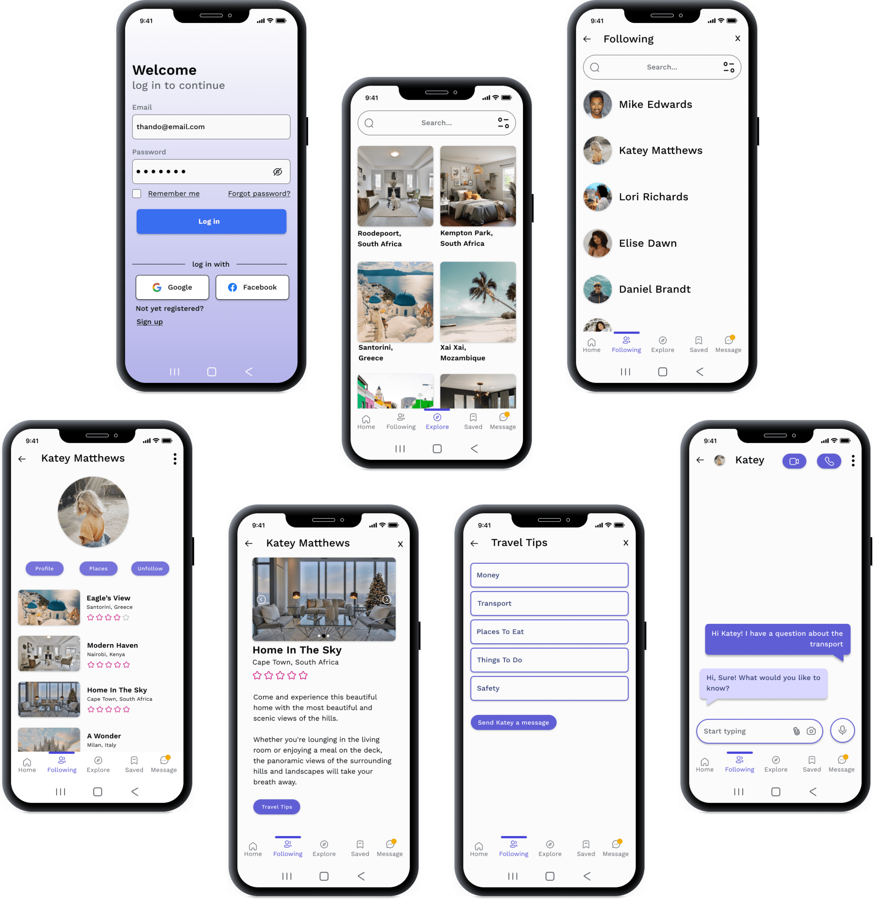

NB: This was my first case study as part of my UX Design course in a program called Entry Level.
Usability testing
For the test, I created a high fidelity prototype and I invited 6 users to test the app using Figma and voice call. The feedback I received in terms of the ease of use, ease of interface and satisfaction of the app was app was good, although most of the users wanted an option to login with Google or Facebook for convenience.
When conducting the usability testing, I realised that I would have to add an option to sign in with Gmail or Facebook as this was more convenient for them to avoid having to remember another password.
Hi-Fi Prototype
Conclusion
This project pushed me to get out of my comfort zone by reaching out to and talking to different people. I also learned that collaboration goes a long way; my group members and I would ask each other questions and brainstorm together where we struggled. Lastly, I found that I need to improve my research and communication skills in future as this will allow me to ask better questions and come up with better solutions.